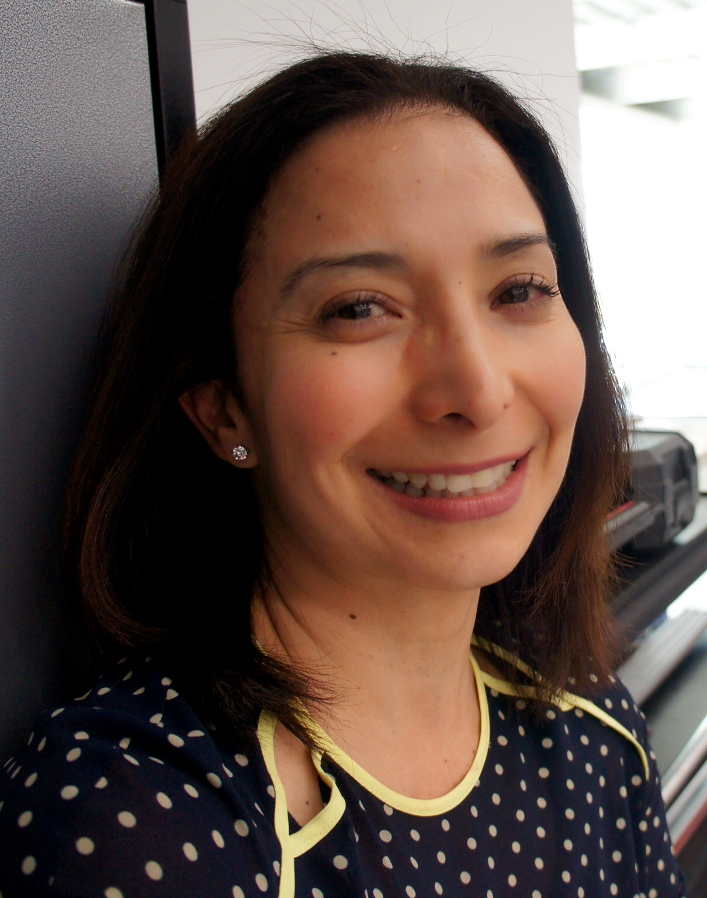
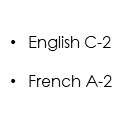

Claudia Lanz Resume

Summary
Education
Master of Human Resources Management and Administration - Universidad Internacional de la Rioja
Work Experience
Human Resources Manager KIND
Jan 2022 - Jan 2023
Maintained company compliance with local, state, and federal laws, to established organizational standards.
Facilitated onboarding sessions for new hires, bolstering employee job position knowledge and skillset in Mexico, LATAM & Europe.
Human Resources Manager Advance Real Estate May 2016 - May 2021
Facilitated onboarding sessions for new hires, bolstering employee job position knowledge and skillset.
Built up processes from the ground, such as recruitment and hiring, talent retention.
Skills
Experience working with EORs | Specialized HR projects | Policy and procedure development | Compensation and benefits Employee Relations
Languages
